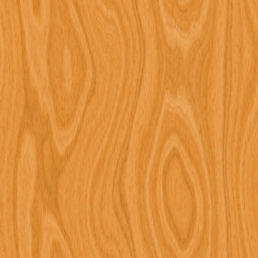

Plovárna
Semestrální práce do předmětu Y36MVR, zimní semestr 2009, cvičení pátek 9:15, tým 3
Technická specifikace - Stůl se slunečníkem
Autor: Jiří Mašek
Popis řešení
Model obsahuje 4 úrovně detailů.
- < 25 m
- Při vzdálenosti menší než 25 metrů se model zobrazuje se všemi detaily.
- 25 - 70 m
-
Textury jsou v modelu nahrazeny barvami.
Laťky tvořící sedák a opěradlo židle jsou nahrazeny kvádry.
Nohy židlí reprezentované uzly Extrusion jsou nahrazeny kvádry.
Tyčky, jenž tyto nohy spojovaly, jsou vynechány.
Látkový potah slunečníku tvořený uzlem Extrusion je zjednodušen.
- 70 - 120 m
- Celý model je nahrazen uzlem Billboard.
- > 120 m
- Celý model je nahrazen prázdným uzlem Group {}.
Parametry prototypu
PROTO TableWithParsol [ exposedField SFInt32 lod 1 exposedField SFColor parsolColor 0.286882 0.274000 0.000000 exposedField SFColor lightColor 0.286882 0.274000 0.000000 exposedField MFString chairTexture "./textures/284-v2.jpg" exposedField MFString billboardTexture "./textures/billboard.png" ]
Geometrie
- První úroveň - 36 521 trojúhelníků
- Druhá úroveň - 24 723 trojúhelníků
- Třetí úroveň - 1 742 trojúhelníků
- Čtvrtá úroveň - 0 trojúhelníků
Textury
| Jméno textury | Náhled | Velikost | Poznámka |
|---|---|---|---|
| Dřevo |  | 76.4 kB | Textura je použita pro opěrátko a sedák skládací židle. |
Zvuky
| Jméno zvuku | Link | Velikost | Délka | Poznámka |
|---|---|---|---|---|
| Zavírání slunečníku | umbrella_2.wav | 195.5 kB | 1,1s | Zvuk doprovázející zavírání slunečníku. |
Schéma dynamických akcí
Schéma zde není uvedeno, neboť by bylo oproti předešlé fázi nesrovnatelně složitější a tudíš velmi nepřehledné, špatně čitelné a prakticky nicneříkající.
Skripty
"Inteligentní" chování modelu zajišťují celkem čtyři uzly obsahující skripty v jazyce Javascript. První skript je definován přímo v prototypu a ovládá části modelu závislé na hlavním vypínači. Zbylé tři regulují možnosti manipulace s jednotlivými částmi židle, a tak se nacházejí vždy v té které příslušné části.
Skript obsluhující hlavní vypínač
Tento skript registruje tři vstupní události. První z nich, touchTime, je vyvolána interně, a to stisknutím hlavního vypínače. Další dvě, externalTouch a lights, reagují na stiskutí tlačítek HUD panelu, přičemž první z nich zastaví, popř. spustí, "chod stroje" a druhá rozsvítí nebo zasne světlo, jenž je součástí modelu.
Skript si uchovává v paměti stav, ve kterém se slunečník nacházel při pozastavení "chodu stroje", a tudíž při jeho opětovném spuštění pokračuje animace plynule dál.
Ve chvíli, kdy je stisknut hlavní vypínač, dojde k zastavení animace slunečníku a omezena možnost manilupace s dílčími částmi židlí, případně naopak.
DEF Controller Script {
field SFBool enabled TRUE
field SFTime stopTime 0
field SFTime startTime 0
eventOut SFTime parsolStopTime
eventOut SFTime parsolStartTime
eventIn SFTime touchTime
eventIn SFTime externalTouch IS externalTouch
eventIn SFBool lights IS lightsOn
eventOut SFBool proximityLight
eventOut SFBool lightSensorEnabled
eventOut SFTime stop
eventOut SFTime start
eventOut SFBool otherMovement
url "javascript:
function initialize() {
parsolStartTime = startTime;
parsolStopTime = -1;
proximityLight = false;
lightSensorEnabled = true;
}
function lights (val) {
proximityLight = val;
lightSensorEnabled = !val;
}
function externalTouch (time) {
touchTime (time);
}
function touchTime (time) {
if (enabled) {
stop = time;
stopTime = time;
parsolStartTime = -1;
parsolStopTime = time;
otherMovement = false;
} else {
start = time;
startTime = startTime + (time - stopTime);
parsolStartTime = startTime;
parsolStopTime = -1;
otherMovement = true;
}
enabled = !enabled;
}
"
}
ROUTE Controller.lightSensorEnabled TO proximity.enabled
ROUTE Controller.proximityLight TO proximityLight.on
ROUTE Controller.otherMovement TO Chair1.enableFolding
ROUTE Controller.otherMovement TO Chair2.enableFolding
ROUTE Controller.otherMovement TO Chair3.enableFolding
ROUTE Controller.otherMovement TO Chair4.enableFolding
ROUTE Controller.otherMovement TO buttonAttentionTimer.enabled
ROUTE Controller.otherMovement TO machineInProgressTimer.enabled
ROUTE Controller.parsolStopTime TO machineInProgressTimer.stopTime
ROUTE Controller.parsolStopTime TO buttonAttentionTimer.stopTime
ROUTE Controller.parsolStartTime TO machineInProgressTimer.startTime
ROUTE Controller.parsolStartTime TO buttonAttentionTimer.startTime
ROUTE Controller.stop TO buttonStopTimer.startTime
ROUTE Controller.start TO buttonStartTimer.startTime
ROUTE Controller.start TO parsolSound.startTime
ROUTE Controller.stop TO parsolSound.startTime
Skript regulující možnosti sklápění židle
Jediným posláním toho skriptu je zamezit manipulaci se židlí ve chvíli, kdy je "stroj" vypnut.
Vyskytuje se v kódu celkem třikrát, a to u každé sklopitelné části židle, neboť všechny jsou řešeny jako samostatné prototypy.
DEF Controller Script {
eventOut SFBool enableFolding
eventIn SFBool enable IS enableFolding
url "javascript:
function initialize () {
enableFolding = true;
}
function enable (val) {
enableFolding = val;
}
"
}
ROUTE Controller.enableFolding TO Handler.enabled